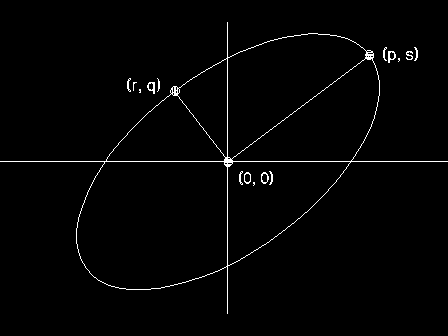
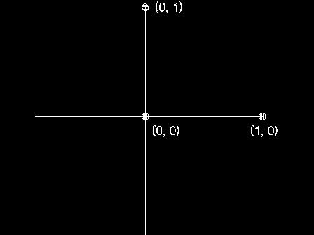

The arc parameters p, q, r, and s, define the shape and orientation of a ellipse that is used for subsequent GpiPointArc, GpiFullArc, and GpiPartialArc functions. For GpiFullArc and GpiPartialArc, they also determine the direction of drawing, as follows:
For GpiFullArc and GpiPartialArc, these parameters also define the nominal size of the ellipse; this may be changed by using the multiplier.
For GpiPointArc, the size of the ellipse is determined by the three points specified on GpiPointArc.
The arc parameters define a transformation that maps the unit circle to the required ellipse, placed at the origin (0,0):
x' = p*x + r*y y' = s*x + q*y
With reference to the figure above, if p*r + s*q = 0, the transform is termed orthogonal, and the line from the origin (0,0) to the point (p,s) is either the radius of the circle, or half the major axis of the ellipse. The line from the origin to the point (r,q) is either the radius of the circle, or half of the minor axis of the ellipse.
For maximum accuracy, orthogonal transforms must be used. The matrix must not be singular.
The initial default values of arc parameters (unless changed with GpiSetDefArcParams) are:
p = 1 r = 0 s = 0 q = 1
producing a unit circle. (See the figure below.).
Arc parameter transformation takes place in world coordinates. Any other non-square transformations in force change the shape of the figure accordingly.
The attribute mode (see GpiSetAttrMode) determines whether the current value of the arc parameters is preserved.